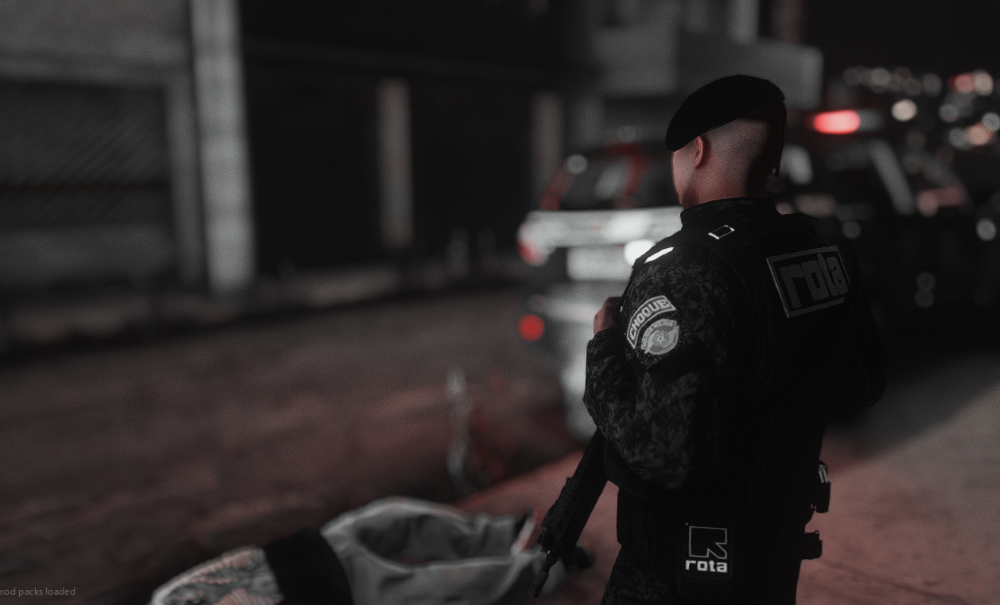
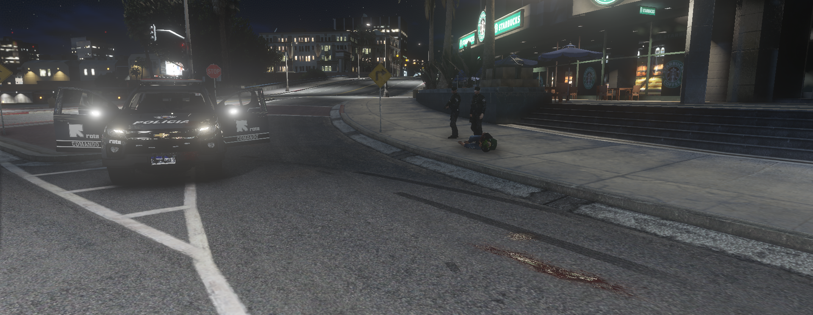

As Rondas Ostensivas Tobias de Aguiar (ROTA) são uma unidade de elite da Polícia Militar do Estado de São Paulo (PMESP), com papel destacado no patrulhamento tático, resposta rápida a ocorrências de alto risco e apoio às demais unidades da corporação.
A história da ROTA começa com a criação do Batalhão Tobias de Aguiar, inaugurado em 1º de dezembro de 1891 na Avenida Tiradentes, bairro da Luz, São Paulo, em um edifício projetado pelo arquiteto Ramos de Azevedo. Inicialmente, o Batalhão fazia parte da então Força Pública Paulista, predecessora da atual Polícia Militar.
A criação formal das Rondas Ostensivas Tobias de Aguiar como unidade especializada ocorreu em 15 de outubro de 1970, formando uma tropa de patrulhamento tático motorizado com equipes altamente treinadas para atuar nas áreas urbanas mais críticas da capital e do interior do estado.
Desde então, a ROTA se consolidou como uma das unidades mais respeitadas da PMESP, conhecida por disciplina, rapidez de resposta e atuação em ocorrências complexas, passando por contínuas modernizações táticas, equipamentos e treinamentos especializados.
O Quartel do Batalhão Tobias de Aguiar, localizado na Avenida Tiradentes, é um dos mais tradicionais da Polícia Militar de São Paulo. Desde sua fundação, o espaço serviu de base para unidades especializadas e sempre foi um centro de formação, treinamento e operações de elite, consolidando a imagem de uma tropa disciplinada e preparada para desafios constantes.
O braçal da ROTA representa honra e identidade da tropa, simbolizando: disciplina, compromisso com a missão e lealdade à corporação e à sociedade.
A boina preta é símbolo de disciplina, unidade e espírito de corpo, distinguindo o policial da ROTA dentro da Polícia Militar.
O brasão institucional da ROTA reúne elementos que representam:
Ao longo de mais de cinco décadas desde sua criação oficial, a ROTA consolidou-se como pilar da segurança pública no Estado de São Paulo. A tropa continua evoluindo, incorporando novas técnicas de inteligência, equipamentos modernos e capacitação contínua, mantendo o compromisso de proteger a sociedade com disciplina e eficiência.
Patrulhamento tático, combate ao crime organizado e ações de resposta rápida em situações críticas.
Operações Realizadas
Prisões Efetuadas
Patrulhamentos


Para informações institucionais, utilize os canais oficiais da Polícia Militar do Estado de São Paulo.